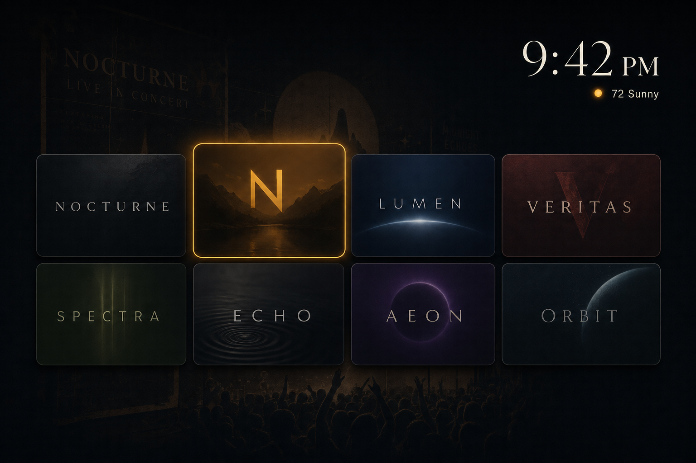
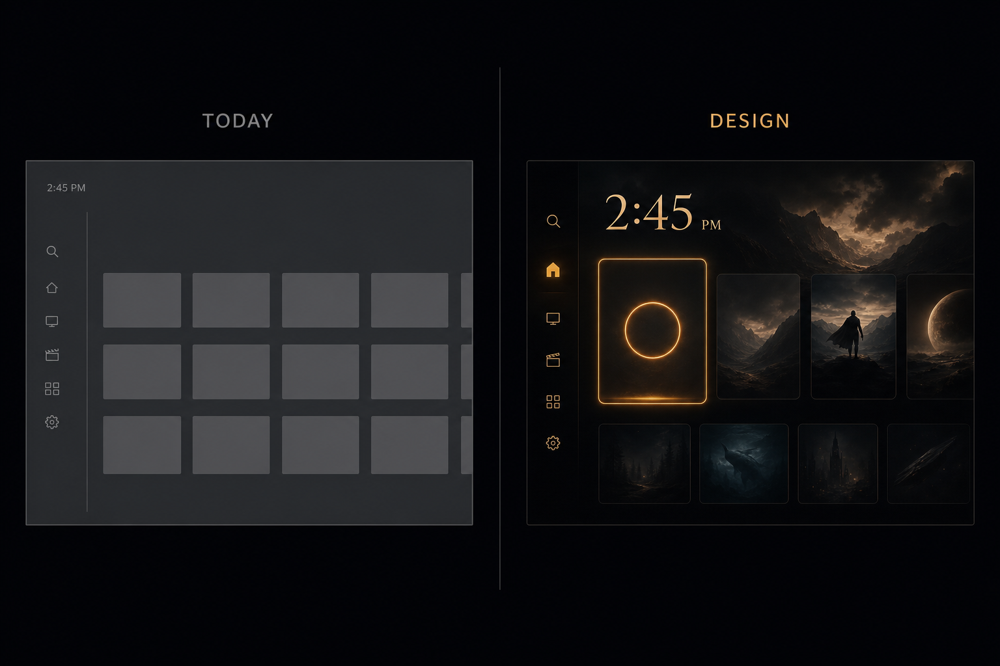
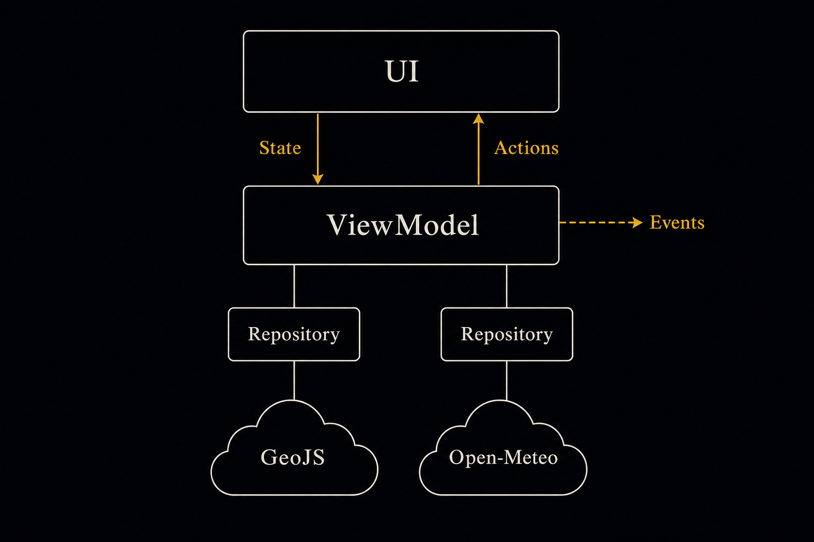
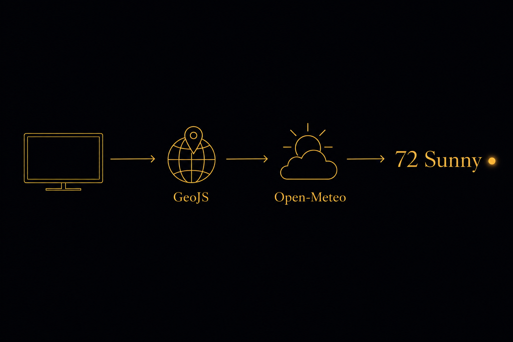
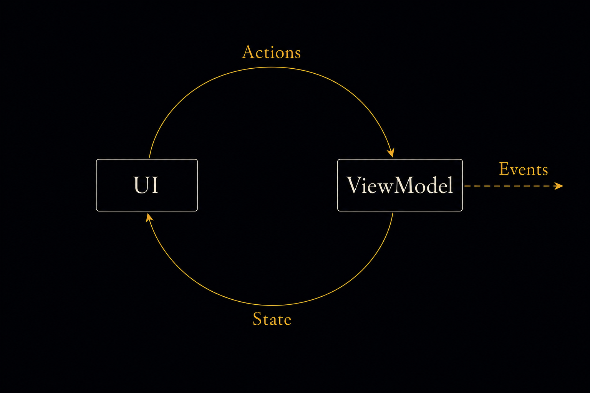
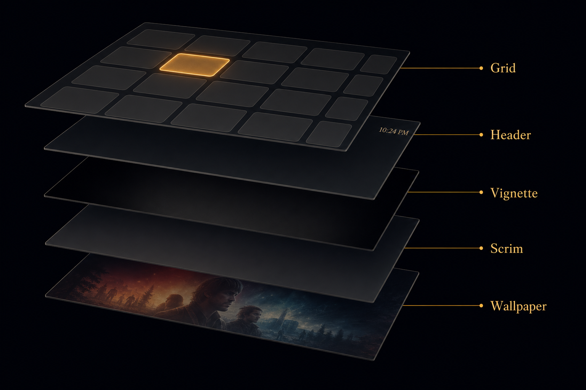
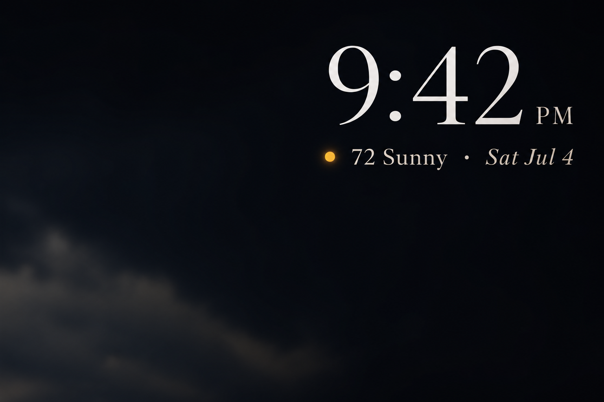

Plan: Nocturne — Minimal TV Launcher
Dark cinematic Android TV launcher · Compose for TV · MVI-lite MVVM · live clock & Open-Meteo weather

Purpose
Transform the existing bare-bones Android TV launcher into Nocturne, the dark cinematic launcher designed in the claude.ai/design project (TV Launcher.dc.html): a bundled Wilco-poster wallpaper under layered scrims, a large Newsreader-serif clock with live weather in the top-right, and a 4-column grid of 16:9 app cards with an amber focus ring. Along the way, restructure the presentation layer into the requested MVI-lite MVVM shape: the ViewModel exposes a single immutable StateFlow<LauncherState>, accepts LauncherActions, and emits one-shot LauncherEvents over a SharedFlow.
Problem
The current app is a functional skeleton, not the designed product. It renders a plain dark grid with a generic "Apps" header and a small clock; there is no wallpaper, no weather, no serif identity, and the focus treatment is stock TV-Material. Architecturally it is close to but not quite the target shape: state flows out of the ViewModel, but side effects (launching apps, failure recovery) live in the Activity as plain callbacks, the clock ticks inside a composable, and the ViewModel hard-constructs its repository, making it untestable. There is also no networking stack, no location strategy, and no chosen weather provider — the design's "72° Sunny" is a hardcoded mock.

Solution
Five phases, each independently verifiable. First lay the foundation (network/serialization dependencies, bundled Newsreader fonts, Nocturne color/type theme — the wallpaper PNG is already bundled at drawable-nodpi/wallpaper.png). Then build a small weather data layer: GeoJS IP-geolocation (HTTPS, keyless — verified live) resolves lat/lon/country once per process, Open-Meteo (keyless, 10k calls/day free) supplies current temperature + WMO weather code, and a pure mapping table turns codes into "Sunny"-style labels. Third, reshape the ViewModel into the MVI-lite contract — single LauncherState, onAction() input, SharedFlow events for app launches — with constructor-injected repositories and a minute-aligned clock ticker. Fourth, rebuild the UI to the design: wallpaper + two scrims, right-aligned clock/weather header (Weather Layouts variant B), and restyled banner cards with the amber focus treatment. Finally, run every quality gate plus an on-device QA checklist.

Relevant Files
Single-module app, package com.pavlovsfrog.minimaltvlauncher. Paths below are relative to the repo root; Kotlin sources live under app/src/main/java/com/pavlovsfrog/minimaltvlauncher/.
Existing Files
- existing
gradle/libs.versions.toml— add OkHttp, kotlinx-serialization, and the serialization plugin - existing
app/build.gradle.kts— apply serialization plugin, add new dependencies - existing
app/src/main/AndroidManifest.xml— addINTERNETpermission (both APIs are HTTPS; no cleartext config needed) - existing
.../MainActivity.kt— collecteventsfor one-shot app launches, dispatchLauncherActions, build ViewModel via factory - existing
.../LauncherViewModel.kt— rewrite as MVI-lite: single state, action inlet, event outlet, clock ticker, weather polling - existing
.../LauncherScreen.kt— rebuild to the Nocturne design (background, header, grid, cards) - existing
.../AppsRepository.kt— unchanged logic; gains an interface only if needed for VM tests (prefer a thinfun interfaceloader) - existing
.../AppInfo.kt— unchanged - existing
.../theme/Theme.kt— replace stock dark scheme with the Nocturne palette and Newsreader typography - existing
app/src/main/res/drawable-nodpi/wallpaper.png— bundled Wilco poster (1906×1420, 6.2 MB; optional compression task in Phase 5)
New Files
- new
.../LauncherContract.kt—LauncherState,LauncherAction,LauncherEvent, and sub-states (AppsUiState,ClockUiState,WeatherUiState) - new
.../ClockFormatter.kt— pure epoch-millis →ClockUiStateformatter (SimpleDateFormat; no desugaring needed at minSdk 24) - new
.../weather/JsonFetcher.kt—fun interface JsonFetcher { suspend fun fetch(url: String): String }+ OkHttp implementation with timeouts - new
.../weather/GeoJsApi.kt— GeoJS DTO (lat/lon arrive as strings) + parse intoGeoLocation - new
.../weather/OpenMeteoApi.kt— forecast URL builder + response DTO (temperature_2m,weather_code,is_day) - new
.../weather/WmoWeatherCode.kt— WMO code → display label table (day/night aware) - new
.../weather/WeatherRepository.kt— orchestrates geolocate → forecast, °F/°C by country, 30-minute TTL cache - new
.../theme/Type.kt— NewsreaderFontFamily+ TV type scale - new
.../theme/NocturneColors.kt— palette constants (or fold intoTheme.kt; builder's choice) - new
.../ui/NocturneBackground.kt— wallpaper image + linear scrim + radial vignette - new
app/src/main/res/font/newsreader_regular.ttf(+_medium,_semibold,_italic,_medium_italic) — bundled OFL-licensed static fonts - new
app/src/test/java/.../weather/WmoWeatherCodeTest.kt— mapping unit tests - new
app/src/test/java/.../weather/GeoJsApiTest.kt— DTO parse tests (string coords) - new
app/src/test/java/.../weather/OpenMeteoApiTest.kt— URL + DTO parse tests - new
app/src/test/java/.../weather/WeatherRepositoryTest.kt— fake-fetcher success/failure/cache tests - new
app/src/test/java/.../ClockFormatterTest.kt— fixed-instant formatting tests - new
app/src/test/java/.../LauncherViewModelTest.kt— state/action/event tests with fakes - new
app/src/androidTest/java/.../LauncherScreenTest.kt— Compose smoke test with fake state
Implementation Phases
IMPORTANT: Execute every phase and task step by step, in order, top to bottom.
Status markers: [] idle · [wip] in progress · [x] complete · [f] failed. All start as []; the Build Plan workflow updates them as it works.
[x] Phase 1: Foundation — dependencies, fonts, theme
Wire in the two new libraries, the INTERNET permission, the bundled Newsreader fonts, and the Nocturne palette/typography so every later phase compiles against the real theme.
1. Gradle dependencies
[x]Ingradle/libs.versions.tomladd versionsokhttp = "5.1.0"andkotlinxSerializationJson = "1.9.0"(verify latest stable on Maven Central and prefer it; both aremavenCentralartifacts so the restrictedgoogle()content filters insettings.gradle.ktsare unaffected)[x]Add librariesokhttp = { module = "com.squareup.okhttp3:okhttp", version.ref = "okhttp" }andkotlinx-serialization-json = { module = "org.jetbrains.kotlinx:kotlinx-serialization-json", version.ref = "kotlinxSerializationJson" }[x]Add pluginkotlin-serialization = { id = "org.jetbrains.kotlin.plugin.serialization", version.ref = "kotlin" }(rides the existingkotlin = "2.3.20"version)[x]Inapp/build.gradle.kts:alias(libs.plugins.kotlin.serialization)in the plugins block;implementation(libs.okhttp)andimplementation(libs.kotlinx.serialization.json)in dependencies
2. Manifest
[x]Add<uses-permission android:name="android.permission.INTERNET" />above the<queries>element
3. Newsreader fonts
[x]Download static Newsreader TTFs (regular 400, medium 500, semibold 600, italic 400, medium-italic 500) via google-webfonts-helper:curl -L "https://gwfh.mranftl.com/api/fonts/newsreader?download=zip&subsets=latin&variants=regular,500,600,italic,500italic&formats=ttf" -o newsreader.zip(fallback: static instances from the fonts.google.com Newsreader download; do not bundle the variable font — minSdk 24 predates variable-font support at API 26)[x]Place asapp/src/main/res/font/newsreader_regular.ttf,newsreader_medium.ttf,newsreader_semibold.ttf,newsreader_italic.ttf,newsreader_medium_italic.ttf(Android resource names: lowercase, underscores only)[x]Createtheme/Type.kt: aNewsreaderFontFamilymapping those five files toFontWeight.Normal/Medium/SemiBoldand italic styles, and a TV-MaterialTypographybuilt on it (sizes per the px→dp table in Notes)
4. Nocturne palette + theme
[x]Createtheme/NocturneColors.ktwith the palette from the Notes color table (base#08090C, text tiers, amber accent#EFA831, sun-dot#F9B73F, card fallback fillWhite @ 3.5%, card borderWhite @ 6%)[x]Updatetheme/Theme.kt: keep the always-darkdarkColorSchemebut overridebackground,surface,surfaceVariant,onSurface,onSurfaceVariant, andborder-adjacent slots with Nocturne values, and pass the newTypography[x]Confirmdrawable-nodpi/wallpaper.pngis present (already copied) and referenced nowhere yet — the background composable lands in Phase 4
5. Testing Strategy
Nothing behavioral yet — the gate is that the project still compiles and lints cleanly with the new plugin, dependencies, fonts, and theme in place. Font resources are validated at build time by AAPT (bad TTFs or bad resource names fail the build).
[x]./gradlew :app:assembleDebug— serialization plugin applies, deps resolve, font resources pack[x]./gradlew :app:lintDebug— no new lint errors (permission + resources are well-formed)
[x] Phase 2: Weather data layer
A small, fully unit-testable pipeline: GeoJS resolves where the TV is, Open-Meteo says what the sky is doing, a pure table turns WMO codes into words. No API keys anywhere.

1. HTTP + parsing primitives
[x]weather/JsonFetcher.kt:fun interface JsonFetcher { suspend fun fetch(url: String): String }plusOkHttpJsonFetcher(one sharedOkHttpClient, 10 s connect/read timeouts, executes onDispatchers.IO, non-2xx →IOException)[x]SharedJson { ignoreUnknownKeys = true }instance for all DTO parsing
2. GeoJS geolocation
[x]weather/GeoJsApi.kt: endpointhttps://get.geojs.io/v1/ip/geo.json; DTO withlatitude/longitudeasString(GeoJS quirk — verified live),city,country_code,timezone; parse intoGeoLocation(latitude: Double, longitude: Double, city: String?, countryCode: String?), throwing on unparseable coordinates
3. Open-Meteo forecast
[x]weather/OpenMeteoApi.kt: URL builder forhttps://api.open-meteo.com/v1/forecast?latitude=…&longitude=…¤t=temperature_2m,weather_code,is_day&temperature_unit=fahrenheit|celsius&timezone=auto(coordinates formatted withLocale.USto avoid comma decimals); DTO for thecurrentobject; sample response in Notes[x]weather/WmoWeatherCode.kt:fun label(code: Int, isDay: Boolean): String?per the WMO table in Notes (code 0 → "Sunny" by day / "Clear" by night; unknown codes →null, meaning show temperature only)
4. Repository
[x]weather/WeatherRepository.kt: constructor takesJsonFetcherand aclock: () -> Long(for TTL tests); exposessuspend fun currentWeather(): Result<Weather>whereWeather(temperature: Int, unit: TempUnit, code: Int, isDay: Boolean, city: String?)[x]Behavior: geolocation cached for the process lifetime; forecast cached 30 minutes; concurrent callers deduped with aMutex; unit = Fahrenheit whencountryCode ∈ {US, LR, MM}else Celsius; any failure returns the last cached success if one exists, elseResult.failure
5. Testing Strategy
Pure JVM unit tests with kotlinx-coroutines-test (already a dependency) and a fake JsonFetcher returning fixture JSON strings (captured real responses, embedded as constants). Edge cases: string coordinates, unknown WMO codes, non-US country → Celsius, fetch failure with and without a warm cache, TTL expiry via the injected clock.
[x]./gradlew :app:testDebugUnitTest— GeoJS parse, Open-Meteo parse + URL, WMO mapping, and repository cache/failure tests all green
[x] Phase 3: MVI-lite state layer
Reshape the ViewModel into the requested contract: one immutable state object out, actions in, a SharedFlow of one-shot events for things that must happen exactly once (launching an app).

1. Contract
[x]CreateLauncherContract.ktexactly as specified in the Notes contract listing:LauncherState(apps, clock, weather),AppsUiState.Loading/Ready,ClockUiState(time, amPm, date),WeatherUiState.Hidden/Ready(tempText, condition),LauncherAction.AppClicked/ScreenResumed/LaunchFailed,LauncherEvent.LaunchApp(componentName); delete the oldLauncherUiStatefromLauncherViewModel.kt[x]CreateClockFormatter.kt: purefun format(epochMillis: Long, locale: Locale = Locale.getDefault()): ClockUiStateusingSimpleDateFormatpatterns"h:mm","a", and"EEE · MMM d"(middle-dot literal, matching the design's "Thu · Jul 4")
2. ViewModel rewrite
[x]ConvertLauncherViewModelfromAndroidViewModelto a plainViewModel(appsLoader, weatherRepository, currentTimeMillis: () -> Long = System::currentTimeMillis); add acompanionViewModelProvider.Factorythat builds real dependencies from the application context[x]State: singleMutableStateFlow(LauncherState())exposed asStateFlow; updates always via_state.update { it.copy(…) }[x]Events:MutableSharedFlow<LauncherEvent>(extraBufferCapacity = 1)exposed asSharedFlow; emitted withtryEmit[x]fun onAction(action: LauncherAction):AppClicked→ emitLaunchApp(app.componentName);ScreenResumed→ reload apps + refresh weather (repository TTL makes the refresh cheap);LaunchFailed→ reload apps[x]Clock ticker coroutine ininit: updateclockstate, thendelay(60_000 - now % 60_000)so ticks align to minute boundaries (design shows minutes only)[x]Weather loop coroutine ininit: fetch, mapResultintoWeatherUiState.Ready(tempText = "72°", condition = label ?: "")or keepHiddenon cold failure, thendelay(30.minutes)and repeat
3. Activity wiring
[x]MainActivity: build the VM with the new factory; collecteventsin alifecycleScope.launch { repeatOnLifecycle(STARTED) { … } }; onLaunchApprun the existing intent code, catchingActivityNotFoundException→viewModel.onAction(LaunchFailed)[x]ReplaceonResume()'s directrefresh()call withviewModel.onAction(LauncherAction.ScreenResumed); passstateandonAction(not bare callbacks) intoLauncherScreen[x]KeepLauncherScreencompiling against the new signature with minimal edits (full visual rebuild is Phase 4)
4. Testing Strategy
LauncherViewModelTest on the JVM with StandardTestDispatcher + Dispatchers.setMain, fake apps loader and a fake WeatherRepository seam (extract a minimal interface if constructor injection alone is awkward), and a fixed currentTimeMillis. Cases: initial load flips AppsUiState.Loading → Ready; AppClicked emits exactly one LaunchApp event; LaunchFailed reloads apps; weather success populates WeatherUiState.Ready and failure leaves Hidden; clock state formats the injected instant. Plus ClockFormatterTest: 12:00 noon/midnight render as "12", minutes zero-pad, date matches "EEE · MMM d".
[x]./gradlew :app:testDebugUnitTest— ViewModel + formatter suites green alongside Phase 2 tests[x]./gradlew :app:assembleDebug— Activity/Screen wiring compiles
[x] Phase 4: Nocturne UI
Rebuild LauncherScreen to the design: wallpaper under two scrims, the "Big clock hero" header (Weather Layouts variant B), and the 4-column banner grid with amber focus. All dimensions come from the px→dp table in Notes (design px ÷ 2 = dp at TV xhdpi).

1. Background
[x]ui/NocturneBackground.kt: aBoxdrawing (a)Image(painterResource(R.drawable.wallpaper), contentScale = ContentScale.Crop)full-screen over a#08090Cbase, (b) a verticalBrush.verticalGradientscrim —rgb(7,8,11)at alphas 0.62 → 0.34 (34%) → 0.50 (70%) → 0.82 (100%), (c) a radial vignette viaModifier.drawWithCache: transparent to 55% of the radius, thenrgb(7,8,11) @ 0.55at the corners, radius ≈ hypotenuse/2 of the actual size[x]ReplaceMainActivity's plainSurfacewithNocturneBackground(keep aSurfacewith transparent container color inside if TV-Material locals require it)
2. Header — clock + weather (variant B)
[x]Right-aligned column (remove the old "Apps" title row entirely): baseline row of time at 60sp Newsreader 400 inTextPrimary #F6F7F9(line-height ~0.9, letter-spacing 0.5sp) + AM/PM at 17sp medium in#CDD2DA, with a soft shadow (Shadow(black 70%, blurRadius ≈ 9sp)) matching the design's text-shadow[x]Second row (10dp gap, right-aligned): 10dp sun dot — circle ofSunDot #F9B73Fwith an amber glow (radial brush orblur-drawn halo) — then "72° Sunny" at 13sp medium#E6E9EE, a 3dp separator dot#B6BCC6, then the date at 13sp italic#D2D6DD[x]Render from state only:WeatherUiState.Hidden→ row shows just the date (no dot, no temp);condition == ""→ temp + date without the condition word
3. App grid + cards
[x]Screen padding 50dp horizontal / 37dp vertical; grid staysLazyVerticalGrid(GridCells.Fixed(4))with 20dp gaps andverticalArrangement = Arrangement.spacedBy(20.dp, Alignment.CenterVertically)so an under-full grid centers vertically like the design[x]Card restyle (banners-only decision): 16:9Card,RoundedCornerShape(8.dp),CardDefaults.scale(focusedScale = 1.07f), unfocused border 1dpWhite @ 6%, focused borderBorder(BorderStroke(3.dp, Amber #EFA831)), focused glowGlow(elevationColor = Amber, elevation = 24.dp)[x]Card content: banner apps → full-bleedContentScale.Cropimage (unchanged); bannerless apps → icon at 32dp centered in a card filledWhite @ 3.5%; no image at all → first letter in Newsreader semibold as today[x]Label under every card: 14sp Newsreader medium,#CDD2DA, single line, ellipsized, centered, 8dp top padding (needed to identify bannerless apps; see Questionables)[x]Keep the first-itemFocusRequesterautofocus; verify D-pad reachability of all cards and that the focus scale doesn't clip against grid bounds (LazyVerticalGridcontent padding bottom 24dp)[x]RestyleCenteredMessage("Loading apps…", "No apps installed") as 16sp Newsreader italic in#7C7F88
4. Previews
[x]Add@Preview(device = "id:tv_1080p")composables fed by hand-builtLauncherStatefixtures: loaded grid + weather, weather-hidden, empty list
5. Testing Strategy
Compose instrumented smoke test (LauncherScreenTest) using the existing ui-test-junit4/test-manifest setup: set a fake Ready state with three apps and weather, assert the time text, "72° Sunny", and app labels are displayed, and assert the first card gains focus. Runs only when a TV emulator/device is attached — if none is available, mark that box [f] with a note and rely on previews + the device QA pass in Phase 5.
[x]SettestInstrumentationRunner = "androidx.test.runner.AndroidJUnitRunner"indefaultConfig(app/build.gradle.kts) — it is currently unset, and relying on AGP's androidx-runner default is unverified on AGP 9.0.1[x]./gradlew :app:assembleDebug— full UI compiles[x]./gradlew :app:lintDebug— clean[x]./gradlew :app:connectedDebugAndroidTest— smoke test green (requires attached TV device/emulator;[f]-allowed per above)
[x] Phase 5: Final validation & polish
Everything green, then a human pass on real hardware, plus the one asset-size cleanup.
1. Asset polish
[x]Recompress the 6.2 MB wallpaper:sips -s format jpeg -s formatOptions 88 wallpaper.png --out wallpaper.jpg(or cwebp -q 85), keep whichever lands ≤ ~1.2 MB with no visible banding under the scrims, update the drawable reference, delete the PNG[x]Add a shortREADME.mdnote: Open-Meteo data (CC-BY 4.0 attribution), GeoJS geolocation, Newsreader under the SIL Open Font License
2. Device QA checklist (manual, on TV hardware or 1080p TV emulator)
[x]Cold start: wallpaper + scrims render, clock correct, grid autofocuses first card[x]Weather appears within a few seconds and matches reality; airplane-mode cold start shows date-only header (no crash), and weather appears after connectivity returns on next resume/poll[x]D-pad: every card reachable, amber ring + 1.07 scale on focus, OK launches the app, HOME returns to Nocturne (set as default launcher)[x]Uninstall an app while Nocturne is backgrounded → resume removes its card; launching a just-uninstalled app doesn't crash (LaunchFailed path refreshes)[x]Clock rolls over a minute boundary correctly and date reads "EEE · MMM d"
3. Testing Strategy
The full project quality gates, one final time, from a clean state. These are the same gates a fresh clone must pass.
[x]./gradlew clean :app:assembleDebug— clean build[x]./gradlew :app:testDebugUnitTest— all unit suites[x]./gradlew :app:lintDebug— zero errors
Validation Commands
Execute these commands to validate the entire plan is complete (these are the project's real gates — Gradle is the only tooling; there is no CI config or CLAUDE.md yet):
[x]./gradlew clean :app:assembleDebug— the app builds from scratch with all new code and assets[x]./gradlew :app:testDebugUnitTest— weather layer, clock formatter, and ViewModel suites all pass[x]./gradlew :app:lintDebug— no lint errors[x]./gradlew :app:connectedDebugAndroidTest— Compose smoke test passes (needs an attached TV device/emulator; mark[f]if genuinely unavailable)
Questionables
The four load-bearing decisions (Open-Meteo · IP geolocation · banners-only cards · bundled wallpaper) were made interactively with the user. These remaining assumptions were decided by the planner — each is cheap to change later.
Networking stack: OkHttp + kotlinx-serialization, no Retrofit/Ktor
The app makes exactly two GET requests to keyless public APIs. Retrofit/Ktor would add interface machinery and transitive weight for no gain in a "minimal" launcher. OkHttp gives production TLS/timeout behavior in one dependency; a fun interface JsonFetcher keeps every consumer fake-able in tests. If endpoints multiply, swapping in Retrofit later is mechanical.
°F vs °C comes from GeoJS country code, not a setting
Fahrenheit when the IP geolocates to US/Liberia/Myanmar, Celsius otherwise. TVs frequently have wrong locale settings, and the IP country is already in hand from the geolocation call. No settings UI exists (by design), so this is the least-surprise default.
The weather dot stays amber for all conditions
Every mock in the design project (main file + all five weather-layout variants) shows the same glowing amber dot — it reads as the Nocturne accent, not a condition icon. Varying its color by condition (grey overcast, blue rain) is a nice follow-up but is out of scope.
Labels stay under the cards even though the design's cards carry names inside
The design's in-card names belong to its solid-color card style, which the user declined in favor of banners-only. Banner art usually contains the brand name, but icon-fallback apps would be anonymous tiles without a label, and overlaying text on banner art would fight it. Under-card labels in muted Newsreader keep both cases identified without touching the art.
Weather freshness: 30-minute TTL, refresh on resume, no persistence
A launcher is a long-lived foreground process; in-memory caching plus a resume-triggered refresh keeps usage around ~50 Open-Meteo calls/day — far under the 10k free ceiling — while staying current when you come back to the home screen. Persisting weather across process death buys nothing (it would be stale anyway).
GeoJS has no SLA — failure just hides the weather row
GeoJS (get.geojs.io) is free, HTTPS, keyless, and was verified working during planning; ip-api.com was rejected because its free tier is HTTP-only (Android blocks cleartext by default) and ipapi.co rate-limited during testing. If GeoJS ever dies, the header degrades to clock + date and the swap is one small file. A hardcoded-coordinates fallback in BuildConfig was deemed unnecessary complexity for now.
SimpleDateFormat instead of java.time
minSdk 24 predates java.time (API 26) and enabling core-library desugaring for one clock string is not worth the build complexity. The formatter is a pure function with tests, so migrating later is trivial.
Package name is com.pavlovsfrog.minimaltvlauncher
Renamed from the placeholder com.example prefix to the owned com.pavlovsfrog namespace. This touches every source file's package/import and the Gradle namespace/applicationId; note the new applicationId installs as a distinct app rather than an update to any prior com.example build.
Notes
MVI-lite contract (authoritative)
This is the exact shape Phase 3 implements — state down, actions up, events for one-shots:
data class LauncherState(
val apps: AppsUiState = AppsUiState.Loading,
val clock: ClockUiState = ClockUiState("", "", ""),
val weather: WeatherUiState = WeatherUiState.Hidden,
)
sealed interface AppsUiState {
data object Loading : AppsUiState
data class Ready(val apps: List<AppInfo>) : AppsUiState
}
data class ClockUiState(val time: String, val amPm: String, val date: String)
sealed interface WeatherUiState {
data object Hidden : WeatherUiState // loading, or failed with no cache
data class Ready(val tempText: String, val condition: String) : WeatherUiState // "72°", "Sunny"
}
sealed interface LauncherAction {
data class AppClicked(val app: AppInfo) : LauncherAction
data object ScreenResumed : LauncherAction
data object LaunchFailed : LauncherAction
}
sealed interface LauncherEvent {
data class LaunchApp(val componentName: ComponentName) : LauncherEvent
}ViewModel surface: val state: StateFlow<LauncherState> · val events: SharedFlow<LauncherEvent> · fun onAction(LauncherAction). The Activity is the only event consumer (it owns startActivity); the composable tree renders purely from state and forwards user intent through onAction.
Design → Compose dimension table
The design canvas is 1920×1080 px. Android TV at 1080p is xhdpi (density 2.0) = 960×540dp, so design px ÷ 2 = dp/sp:
| Element | Design (px) | Compose (dp/sp) |
|---|---|---|
| Screen padding | 100 h / 74 v | 50dp / 37dp |
| Grid gap | 40 | 20dp |
| Card corner radius | 16 | 8dp |
| Focus ring / scale | 5 ring · 1.07× | 3dp border · focusedScale = 1.07f |
| Time / AM-PM | 120 / 34 | 60sp / 17sp |
| Weather + date row | 26 | 13sp |
| Sun dot / separator dot | 20 / 5 | 10dp / 3dp |
| Card label (under card) | — (adapted) | 14sp |
| Fallback icon chip | 64 | 32dp |
Nocturne palette
| Token | Value | Source / use |
|---|---|---|
BaseBlack | #08090C | screen base under wallpaper; scrim tint is rgb(7,8,11) |
TextPrimary | #F6F7F9 | clock time |
TextSecondary | #CDD2DA | AM/PM, card labels |
TextWeather | #E6E9EE | "72° Sunny" |
TextDate | #D2D6DD | date (italic) |
DotSeparator | #B6BCC6 | 3dp separator dot |
TextMuted | #7C7F88 | loading/empty messages |
Amber | #EFA831 | focus ring + glow — sRGB conversion of oklch(0.78 0.15 75) |
SunDot | #F9B73F | weather dot — sRGB conversion of oklch(0.82 0.15 78) |
CardFill | White @ 3.5% | bannerless card background (over scrimmed wallpaper) |
CardBorder | White @ 6% | 1dp unfocused card border |
Scrims: vertical gradient of rgb(7,8,11) at alpha 0.62 → 0.34 (34%) → 0.50 (70%) → 0.82 (100%); radial vignette transparent to 55% radius → alpha 0.55 at edges.
API references (verified during planning, 2026-07-04)
GeoJS — GET https://get.geojs.io/v1/ip/geo.json, no key, HTTPS. Live response captured (note string coordinates):
{"city":"Nashville","country_code":"US","latitude":"36.1671","longitude":"-86.7861",
"timezone":"America/Chicago","organization_name":"Google Fiber Inc.", …}Open-Meteo — GET https://api.open-meteo.com/v1/forecast?latitude=36.17&longitude=-86.79¤t=temperature_2m,weather_code,is_day&temperature_unit=fahrenheit&timezone=auto, no key, free ≤ 10k calls/day non-commercial, CC-BY 4.0 attribution required (see pricing). Response shape:
{ "current": { "time": "2026-07-04T18:15", "temperature_2m": 72.1,
"weather_code": 0, "is_day": 1 }, … }WMO weather-code → label table
| Codes | Label |
|---|---|
0 | Sunny (day) / Clear (night) |
1 | Mostly Sunny (day) / Mostly Clear (night) |
2 | Partly Cloudy |
3 | Overcast |
45, 48 | Foggy |
51, 53, 55, 56, 57 | Drizzle |
61, 63, 65, 66, 67 | Rain |
71, 73, 75, 77 | Snow |
80, 81, 82 | Showers |
85, 86 | Snow Showers |
95, 96, 99 | Thunderstorm |
| anything else | null → show temperature only |
Weather provider research (decision record)
Chosen: Open-Meteo — free non-commercial tier, no API key or account, 10k calls/day, global models, WMO codes + is_day flag, CC-BY attribution (open-meteo.com, pricing). Rejected: OpenWeatherMap (1k calls/day free but requires an account + key in local.properties — needless secret for a keyless app; docs); WeatherAPI.com (huge free tier, still key-gated); NWS api.weather.gov (keyless and reliable but US-only with a two-request gridpoint flow). Comparison sources: Meteomatics 2026 comparison, Nordic APIs.
Risks & edge cases the builder must honor
- Locale decimal separators: format lat/lon into URLs with
Locale.US(a German-locale TV would otherwise emit36,17and break the query). - GeoJS string coordinates:
latitude/longitudeare JSON strings; parse defensively (toDoubleOrNull, fail the geolocation on null). - SharedFlow delivery: with
replay = 0, an event emitted while no collector is active is dropped —extraBufferCapacity = 1only absorbs a momentarily slow active collector. That is the correct behavior here: a click can only occur while the Activity is started (so a collector is live), and replay is explicitly unwanted (a replayedLaunchAppwould relaunch an app on recreate). Do not rely on events being buffered across lifecycle stops. - Weather must never block the grid: apps and clock render immediately; weather is strictly additive. Any exception in the weather loop is caught inside the loop (log +
Hidden), never crashing the ticker. - Time zone changes (TV moves, DST): the minute-aligned ticker re-reads the default zone every tick, and
ScreenResumedrefreshes the clock immediately, so drift self-corrects within a minute. - Focus scale clipping: 1.07× on edge cards must not clip against screen padding — TV-Material draws scale within the card bounds' layer, but verify visually on-device (Phase 5 QA).
- Wallpaper memory: 1906×1420 decodes to ~10.8 MB in RAM — fine for a single always-on activity, but do not also keep the PNG bytes cached;
painterResourcehandles this correctly.
Explicit non-goals
- No settings UI, no DataStore, no per-app customization or reordering.
- No Hilt/Koin — one factory function is the entire DI story at this size.
- No hi/lo temperatures or forecast rows (weather layout variant B carries neither; variants D/E that do were not chosen).
- No condition-colored weather dot, no weather icons.

Amendments
None yet — this section is append-only and populated by the Update Plan / Update References workflows after first execution.